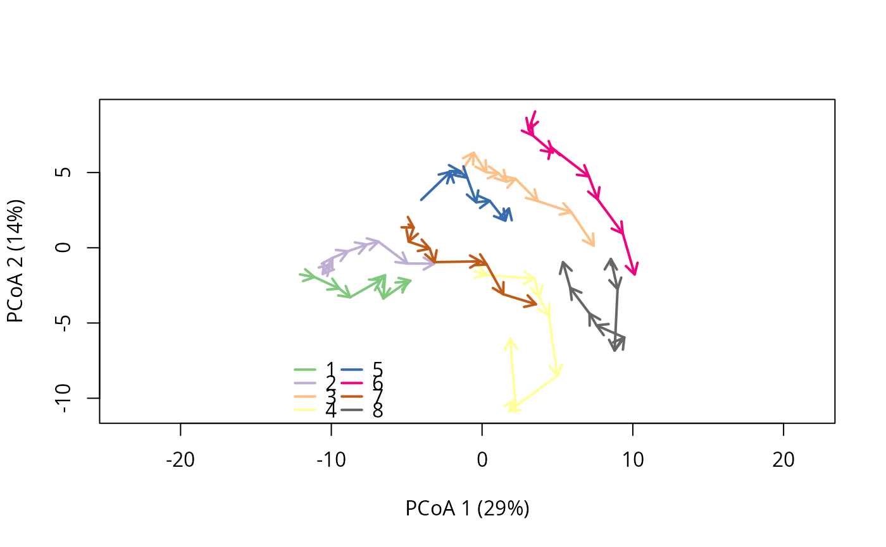

Relative Trajectory Movement Assessment (RTMA) is a method for testing and qualifying of the relative movements of ecological trajectories (e.g. "convergence", "parallel" etc., see details) as described in Djeghri et al. (in prep). It is implemented in function trajectoryRMA().
Arguments
- x
An object of class
trajectories.- alpha
The alpha level for the tests performed in RTMA. Defaults to
0.05.- nperm
Passed to function
trajectoryCorrespondence. The number of permutations to be used in the dynamic correspondence test. Defaults to999.- full.output
Flag to indicate that the full output of tests should be computed. Defaults to
TRUE. Setting toFALSEwill improve computation speed but yield incomplete outputs (see details).- add
Passed to function
trajectoryConvergence. Flag to indicate that constant values should be added (local transformation) to correct triplets of distance values that do not fulfill the triangle inequality.
Value
Function trajectoryRMA returns an object of classes list and RTMA containing:
dynamic_relationships_taxonomy: a data-frame containing the names of the relative movement relationships recognized by RTMA as well as corresponding relationship groups. This part oftrajectoryRMAoutput is independent of the trajectories used as input and is primarily a bestiary (see details). It can be used to transform thedynamic_relationshipsmatrix (see below) to focus on chosen relationship groups.dynamic_relationships: a matrix containing the relative movement relationships attributed to each pair of trajectories.symmetric_convergence: a list containing the results of the symmetric convergence test.asymmetric_convergence: a list containing the results of the two asymmetric convergence tests.correspondence: a matrix containing the results of the the dynamic correspondence tests (partial iffull.out = FALSE).parameters: a vector containing the parametersalpha, the Šidákcorrected_alpha, andnperm.
In addition to the relationships recognized by RTMA, matrix dynamic_relationships provides the role of each trajectory in asymmetric relationships.
The role is provided in parenthesis and applies to the trajectory of the ROW index. For example, "approaching (approacher)" means
that the trajectory of the corresponding row is approaching the trajectory of the corresponding column, which will have "approaching (target)".
In symmetric relationships, the wording (symmetric) is added to indicate that there is no distinction of roles.
Details
Function trajectoryRMA attributes a dynamic relationship to pairs of ecological trajectories A and B describing their relative movement. It does so by combining four tests:
Three convergence tests performed through internal callings of function
trajectoryConvergence:The symmetric convergence test between trajectories A and B.
The asymmetric convergence test assessing if trajectory A approaches trajectory B.
The asymmetric convergence test assessing if trajectory B approaches trajectory A.
One dynamic correspondence test performed through internal callings to function
trajectoryCorrespondence.
To account for multiple testing, trajectoryRMA performs internally a Šidák (1967) correction on the alpha level provided in parameter alpha.
The results of the four tests (p-values and sign of statistic) are used to assign to each trajectory pair a relationship describing their relative movements. RTMA recognizes a total of 10 relationships, some existing in "weak" variations. The following five dynamic relationships are symmetric, i.e. applying to the two trajectories without distinction of roles:
"convergence"- The two trajectories converge. Exists in a weak version."divergence"- The two trajectories diverge. Exists in a weak version."parallel"- The two trajectories travel side by side with broadly similar movements."antiparallel"- As in"parallel"but the two trajectories travel in opposite directions."neutral"- The two trajectories have no particular movements relative to each other (effectively the null hypothesis for RTMA).
The following five dynamic relationships are asymmetric (e.g. in "pursuit" there is a leading and a following trajectory). In these asymmetric relationships the output of function trajectoryRMA gives the role of each trajectory (see Value section). A more general interpretation of asymmetry is to consider that the relationship is oriented (see below, relationship groups).
"approaching"- One trajectory approaches the other. Exists in a weak version."departing"- One trajectory moves away from the other. Exists in a weak version."pursuit"- The two trajectories follow each other."catch-up"- As in"pursuit"but the following trajectory moves faster."escape"- As in"pursuit"but the leading trajectory is faster.
In rare cases, unlikely relationships (labelled "unknown", with a short description in brackets) may occur. These involve contradictory patterns hard to interpret.
RELATIONSHIP GROUPS: It is possible to further sort trajectory relationships in broad relationship groups (not always mutually exclusive). Three such groups are recognized in RTMA:
The
"convergence group", includes relationships that display convergence in the broadest sense with a trend of diminishing distance between the two trajectories. Formally this group includes relationships of"convergence"and"approaching"and their weak versions, as well as"catch-up".The
"divergence group", includes relationships that display divergence in the broadest sense with a trend of increasing distance between the two trajectories. Formally this group includes relationships of"divergence"and"departing"and their weak versions, as well as"escape".The
"oriented group", includes relationships that have, broadly speaking, a trajectory in front and a trajectory in the back implying an orientation to their relationship. This group includes all asymmetric relationships, formally:"approaching"and"departing"and their weak versions,"catch-up","escape"and"pursuit".
Note that a given relationship may belong to two groups (either convergence or divergence group + oriented group) and that "parallel","antiparallel" and "neutral" relationships stand on their own, not belonging to any groups.
In our experience, relationship groups have proven a useful conceptual tool to reveal large scale patterns particularly when adressing many trajectory relationships (see Djeghri et al. in prep).
LIMITATIONS: RTMA has some limitations, in particular it uses trend tests not well suited to study trajectories pairs with changing relative movements (e.g. if two trajectories cross each other, they are first converging then diverging).
We advise users to not only rely on RTMA but to also visualize trajectories using function trajectoryPCoA for ecological interpretations. See Djeghri et al. (in prep) for more details.
Note also that, because RTMA incorporates a correction for multiple testing, it needs somewhat long trajectories to operate (minimum number of survey = 6 at alpha = 0.05).
COMPUTATION TIME: The dynamic correspondence tests performed in RTMA are computationally costly permutation tests only used when all three convergence tests are non-significant.
Function trajectoryRMA performs by default all tests but it is possible to only perform the tests useful for RTMA by setting full.output = FALSE.
This will reduce computation time but the details of the output of RTMA will not contain the information on all possible dynamic correspondence tests, only on relevant ones.
PLOTTING: Functions trajectoryConvergencePlot and trajectoryRMAPlot provide options to plot the results of RTMA.
References
Djeghri et al. (in preparation) Uncovering the relative movements of ecological trajectories.
Šidák, Z. (1967) Rectangular confidence regions for the means of multivariate normal distributions. Journal of the American Statistical Association 62:648-633.
Examples
#Obtain and format some trajectories
data("avoca")
avoca_D_man <- vegclust::vegdiststruct(avoca_strat,
method ="manhattan",
transform = function(x){log(x+1)})
years <- c(1971, 1974, 1978, 1983, 1987, 1993, 1999, 2004, 2009)
avoca_times <- years[avoca_surveys]
avoca_x <- defineTrajectories(d = avoca_D_man,
sites = avoca_sites,
times = avoca_times)
#Visualize the trajectories
trajectoryPCoA(avoca_x,traj.colors = RColorBrewer::brewer.pal(8,"Accent"),length=0.1,lwd=2)
legend("bottomleft",bty="n",legend=1:8,col=RColorBrewer::brewer.pal(8,"Accent"),lwd=2,ncol=2)

#Perform RTMA
trajectoryRMA(avoca_x)
#> $dynamic_relationships
#> 1 2
#> 1 NA "parallel (symmetric)"
#> 2 "parallel (symmetric)" NA
#> 3 "weak approaching (target)" "weak approaching (target)"
#> 4 "pursuit (leader)" "pursuit (leader)"
#> 5 "parallel (symmetric)" "parallel (symmetric)"
#> 6 "weak approaching (target)" "weak approaching (target)"
#> 7 "weak departing (departer)" "weak approaching (target)"
#> 8 "approaching (target)" "approaching (target)"
#> 3 4
#> 1 "weak approaching (approacher)" "pursuit (follower)"
#> 2 "weak approaching (approacher)" "pursuit (follower)"
#> 3 NA "weak approaching (approacher)"
#> 4 "weak approaching (target)" NA
#> 5 "weak approaching (approacher)" "pursuit (follower)"
#> 6 "convergence (symmetric)" "weak approaching (approacher)"
#> 7 "parallel (symmetric)" "neutral (symmetric)"
#> 8 "approaching (target)" "neutral (symmetric)"
#> 5 6
#> 1 "parallel (symmetric)" "weak approaching (approacher)"
#> 2 "parallel (symmetric)" "weak approaching (approacher)"
#> 3 "weak approaching (target)" "convergence (symmetric)"
#> 4 "pursuit (leader)" "weak approaching (target)"
#> 5 NA "weak approaching (approacher)"
#> 6 "weak approaching (target)" NA
#> 7 "weak departing (departer)" "approaching (target)"
#> 8 "weak approaching (target)" "weak approaching (target)"
#> 7 8
#> 1 "weak departing (origin)" "approaching (approacher)"
#> 2 "weak approaching (approacher)" "approaching (approacher)"
#> 3 "parallel (symmetric)" "approaching (approacher)"
#> 4 "neutral (symmetric)" "neutral (symmetric)"
#> 5 "weak departing (origin)" "weak approaching (approacher)"
#> 6 "approaching (approacher)" "weak approaching (approacher)"
#> 7 NA "weak approaching (approacher)"
#> 8 "weak approaching (target)" NA
#>
#> $symmetric_convergence
#> $symmetric_convergence$tau
#> 1 2 3 4 5 6
#> 1 NA -0.05555556 -0.4444444 -0.4444444 -0.4444444 -0.4444444
#> 2 -0.05555556 NA -0.3888889 0.1111111 -0.3333333 -0.3888889
#> 3 -0.44444444 -0.38888889 NA 0.4444444 -0.1111111 -0.6666667
#> 4 -0.44444444 0.11111111 0.4444444 NA 0.6111111 0.2777778
#> 5 -0.44444444 -0.33333333 -0.1111111 0.6111111 NA 0.4444444
#> 6 -0.44444444 -0.38888889 -0.6666667 0.2777778 0.4444444 NA
#> 7 -0.05555556 -0.33333333 -0.3888889 0.4444444 0.1666667 -0.7777778
#> 8 -0.94444444 -0.83333333 -0.6666667 -0.4444444 -0.5555556 -0.5555556
#> 7 8
#> 1 -0.05555556 -0.9444444
#> 2 -0.33333333 -0.8333333
#> 3 -0.38888889 -0.6666667
#> 4 0.44444444 -0.4444444
#> 5 0.16666667 -0.5555556
#> 6 -0.77777778 -0.5555556
#> 7 NA -0.5000000
#> 8 -0.50000000 NA
#>
#> $symmetric_convergence$p.value
#> 1 2 3 4 5 6
#> 1 NA 0.9194554674 0.11943893 0.11943893 0.11943893 0.119438933
#> 2 9.194555e-01 NA 0.18018078 0.76141424 0.25951830 0.180180776
#> 3 1.194389e-01 0.1801807760 NA 0.11943893 0.76141424 0.012665344
#> 4 1.194389e-01 0.7614142416 0.11943893 NA 0.02474096 0.358487654
#> 5 1.194389e-01 0.2595182981 0.76141424 0.02474096 NA 0.119438933
#> 6 1.194389e-01 0.1801807760 0.01266534 0.35848765 0.11943893 NA
#> 7 9.194555e-01 0.2595182981 0.18018078 0.11943893 0.61220238 0.002425044
#> 8 4.960317e-05 0.0008542769 0.01266534 0.11943893 0.04461530 0.044615300
#> 7 8
#> 1 0.919455467 4.960317e-05
#> 2 0.259518298 8.542769e-04
#> 3 0.180180776 1.266534e-02
#> 4 0.119438933 1.194389e-01
#> 5 0.612202381 4.461530e-02
#> 6 0.002425044 4.461530e-02
#> 7 NA 7.517637e-02
#> 8 0.075176367 NA
#>
#>
#> $asymmetric_convergence
#> $asymmetric_convergence$tau
#> 1 2 3 4 5 6 7
#> 1 NA -0.1111111 -0.7222222 -0.7777778 -0.5000000 -0.8333333 -0.5555556
#> 2 -0.11111111 NA -0.8333333 -0.7222222 -0.3888889 -0.8333333 -0.8333333
#> 3 0.05555556 0.2222222 NA -0.7777778 0.2777778 -1.0000000 -0.6111111
#> 4 0.77777778 0.7222222 0.5000000 NA 0.7222222 0.2777778 0.0000000
#> 5 -0.50000000 -0.4444444 -0.8333333 -0.6666667 NA -0.7222222 -0.2777778
#> 6 0.11111111 0.0000000 -0.7777778 -0.8888889 0.5555556 NA -0.7777778
#> 7 0.83333333 0.5555556 -0.5000000 0.3333333 0.7777778 -0.5000000 NA
#> 8 -0.27777778 -0.1111111 0.5000000 -0.3888889 -0.1111111 0.0000000 0.1111111
#> 8
#> 1 -0.8888889
#> 2 -0.7222222
#> 3 -0.8333333
#> 4 -0.3888889
#> 5 -0.6666667
#> 6 -0.8333333
#> 7 -0.7222222
#> 8 NA
#>
#> $asymmetric_convergence$p.value
#> 1 2 3 4 5 6
#> 1 NA 0.761414242 0.0058862434 0.0024250441 0.075176367 8.542769e-04
#> 2 0.7614142416 NA 0.0008542769 0.0058862434 0.180180776 8.542769e-04
#> 3 0.9194554674 0.476708554 NA 0.0024250441 0.358487654 5.511464e-06
#> 4 0.0024250441 0.005886243 0.0751763668 NA 0.005886243 3.584877e-01
#> 5 0.0751763668 0.119438933 0.0008542769 0.0126653439 NA 5.886243e-03
#> 6 0.7614142416 1.000000000 0.0024250441 0.0002425044 0.044615300 NA
#> 7 0.0008542769 0.044615300 0.0751763668 0.2595182981 0.002425044 7.517637e-02
#> 8 0.3584876543 0.761414242 0.0751763668 0.1801807760 0.761414242 1.000000e+00
#> 7 8
#> 1 0.0446152998 0.0002425044
#> 2 0.0008542769 0.0058862434
#> 3 0.0247409612 0.0008542769
#> 4 1.0000000000 0.1801807760
#> 5 0.3584876543 0.0126653439
#> 6 0.0024250441 0.0008542769
#> 7 NA 0.0058862434
#> 8 0.7614142416 NA
#>
#>
#> $correspondence
#> 1 2 3 4 5 6 7 8
#> 1 NA 19.03032 8.458292 -0.3849957 6.9727634 8.870780 4.659245 -4.843623
#> 2 0.001 NA 7.404500 -1.7352106 8.8138162 7.670095 4.378526 -5.364705
#> 3 0.001 0.00100 NA 3.2384825 7.3954199 15.518213 15.765570 -7.467005
#> 4 0.732 0.23500 0.302000 NA -0.4031831 8.449945 5.965950 3.857741
#> 5 0.001 0.00100 0.001000 0.8080000 NA 6.455380 3.822771 -3.049777
#> 6 0.001 0.00200 0.001000 0.0310000 0.0020000 NA 16.816550 -2.728982
#> 7 0.002 0.00700 0.001000 0.0500000 0.0010000 0.001000 NA -3.957437
#> 8 0.001 0.00100 0.001000 0.2830000 0.0540000 0.358000 0.023000 NA
#>
#> $parameters
#> alpha corrected_alpha nperm
#> 0.05000000 0.01274146 999.00000000
#>
#> $dynamic_relationships_taxonomy
#> dynamic_relationship conv_div_group
#> neutral (symmetric) neutral (symmetric) <NA>
#> parallel (symmetric) parallel (symmetric) <NA>
#> antiparallel (symmetric) antiparallel (symmetric) <NA>
#> convergence (symmetric) convergence (symmetric) convergence group
#> weak convergence (symmetric) weak convergence (symmetric) convergence group
#> divergence (symmetric) divergence (symmetric) divergence group
#> weak divergence (symmetric) weak divergence (symmetric) divergence group
#> weak approaching (approacher) weak approaching (approacher) convergence group
#> weak approaching (target) weak approaching (target) convergence group
#> weak departing (departer) weak departing (departer) divergence group
#> weak departing (origin) weak departing (origin) divergence group
#> approaching (approacher) approaching (approacher) convergence group
#> approaching (target) approaching (target) convergence group
#> departing (departer) departing (departer) divergence group
#> departing (origin) departing (origin) divergence group
#> catch-up (leader) catch-up (leader) convergence group
#> catch-up (follower) catch-up (follower) convergence group
#> pursuit (leader) pursuit (leader) <NA>
#> pursuit (follower) pursuit (follower) <NA>
#> escape (leader) escape (leader) divergence group
#> escape (follower) escape (follower) divergence group
#> oriented_group
#> neutral (symmetric) <NA>
#> parallel (symmetric) <NA>
#> antiparallel (symmetric) <NA>
#> convergence (symmetric) <NA>
#> weak convergence (symmetric) <NA>
#> divergence (symmetric) <NA>
#> weak divergence (symmetric) <NA>
#> weak approaching (approacher) oriented group (back)
#> weak approaching (target) oriented group (front)
#> weak departing (departer) oriented group (front)
#> weak departing (origin) oriented group (back)
#> approaching (approacher) oriented group (back)
#> approaching (target) oriented group (front)
#> departing (departer) oriented group (front)
#> departing (origin) oriented group (back)
#> catch-up (leader) oriented group (front)
#> catch-up (follower) oriented group (back)
#> pursuit (leader) oriented group (front)
#> pursuit (follower) oriented group (back)
#> escape (leader) oriented group (front)
#> escape (follower) oriented group (back)
#>
#> attr(,"class")
#> [1] "RTMA" "list"